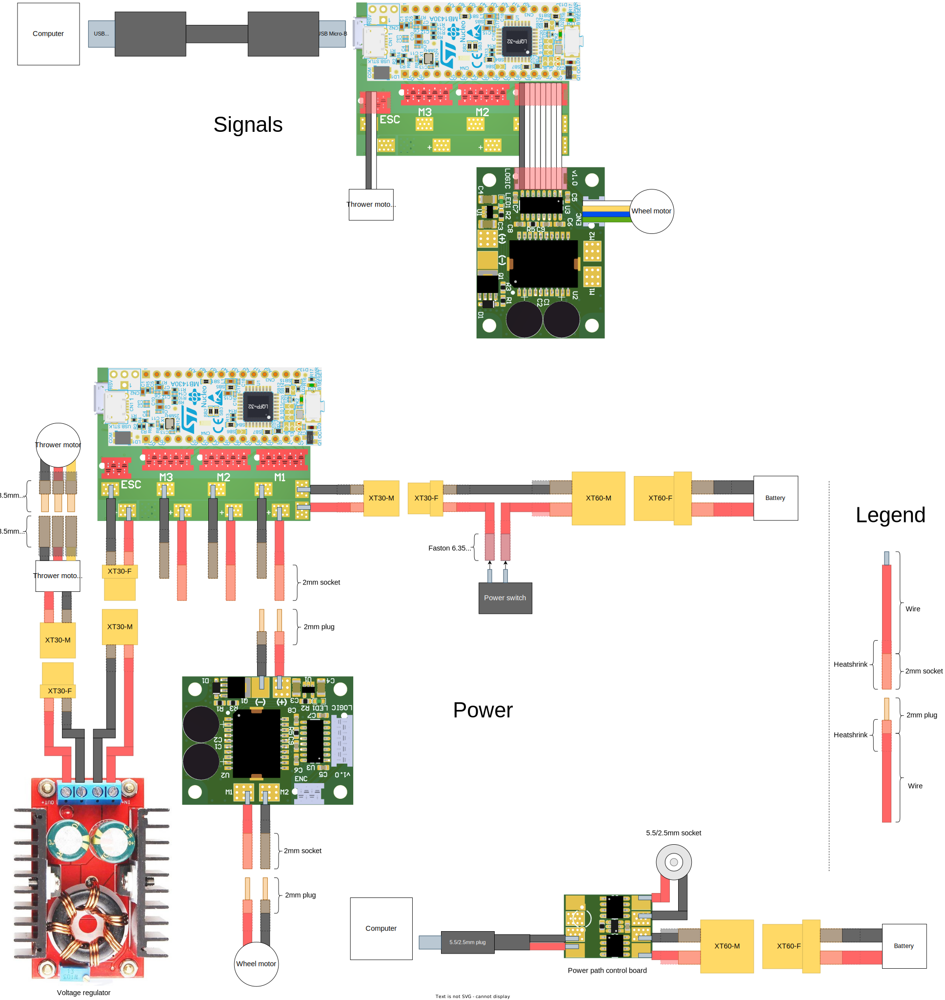

Mainboard
NUCLEO modifications
There are jumper resistors and solder pads on the NUCLEO board that are used to connect some microcontroller pins to pin headers. Firmware uses some pins differently from the default jumper configuration. Necessary modifications are shown in Figure 1. 0 ohm resistors marked as SB2 and SB3 should be removed and jumper pads marked as 8 and 11 should be soldered together. Alternatively SB2 and SB3 resistors can be soldered onto jumper pads 8 and 11.
Firmware
Version history
v1.0.0
-
Initial implementation of 3 wheel motor and 1 thrower motor speed control.
v1.1.0
-
Added failsafe to stop all motors when no commands have been received for 0.5 seconds.
Binary firmware file
Connect NUCLEO to a computer and drag or copy the *.bin file on the NOD_G431KB drive.
Sending commands to mainboard
Struct in firmware
typedef struct __attribute__((packed)) Command {
int16_t speed1;
int16_t speed2;
int16_t speed3;
uint16_t throwerSpeed;
uint8_t disableFailsafe; // 1 to disable failsafe, anything else to enable
uint16_t delimiter;
} Command;Using with python’s struct library
disable_failsafe = 0
struct.pack('<hhhHBH', speed1, speed2, speed3, thrower_speed, disable_failsafe, 0xAAAA)Receiving data from mainboard
Struct in firmware
typedef struct Feedback {
int16_t speed1;
int16_t speed2;
int16_t speed3;
uint16_t delimiter;
} Feedback;Using with python’s struct library
actual_speed1, actual_speed2, actual_speed3, feedback_delimiter = struct.unpack('<hhhH', received_data)Thrower speeds
Thrower speeds are sent to thrower motor controller using DShot protocol. Speed values are between 48 - 2047 for 0 to 100% speed.
Wheel motor driver
Wiring
